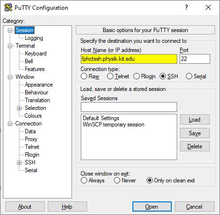
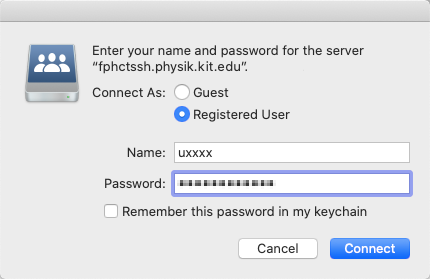

Was ist SSH?
Bei SSH handelt es sich um ein Netzwerkprotokoll mit dessen Hilfe man eine verschlüsselte Verbindung zu einem entfernten Gerät herstellen kann. Gleichzeitig ist SSH auch der Name des Programms mit dem die SSH Verbindung hergestellt wird. Mithilfe von SSH kann nun eine Sitzung in der Linux-Shell auf einem der Poolraum-Rechner bedient werden ohne dafür im Poolraum sein zu müssen. Dazu wird eine SSH Verbindung zum Physik-Poolraum aufgebaut. Wie das funktioniert wird in den untenstenenden Abschnitten ⬇ für jedes Betriebssystem erklärt.
Weiterhin kann man SSH auch verwenden um Dateien zwischen dem Poolraum und einem eigenen PC auszutauschen. Dazu wird das bei SSH häufig mitgelieferte Programm SCP verwenden. Auch hierfür wurden Anleitungen für unterschiedliche Betriebssysteme verfasst.
Zugang unter Windows 10
Bei Windows 10 wird ein SSH Client mitgeliefert. Deshalb muss nichts weiter getan werden als die Eingabeaufforderung oder PowerShell zu öffnen. Beide Programme lassen sich über die Suchfunktion im Startmenü finden. Dort angekommen, muss zum Herstellen einer SSH Verbindung folgender Befehl eingegeben werden, mit dem Zusatz, dass anstelle von uxxxx der Benutzername des zugehörigen Poolraum-Accounts verwendet wird:
ssh uxxxx@fphctssh.physik.uni-karlsruhe.de
Nach Eingabe des Oben ⬆ stehenden Befehls und des Passworts (Passwort wird nach dem Herstellen einer Verbindung abgefragt) ist man im Terminal-Fenster via SSH mit einem Poolraum-Rechner verbunden. Bei der allerersten SSH Sitzung mit einem Server muss die Akzeptanz des Schlüssels des Servers durch eine Eingabe von yes bestätigt werden. Beendet wird die SSH Sitzung mit einer Eingabe des Wortes exit.
Dateiübertragung mittels SCP
Mit dem Programm SCP können Dateien zwischen dem Poolraum und dem eigenen Rechner kopiert werden. Im Folgenden ist ein Beispiel zu sehen bei dem Benutzer uxxxx die Datei Testda.tei zu seinem Poolraum-Account kopiert, sodass diese dort in seinem Download-Ordner gespeichert wird:
scp Testda.tei uxxxx@fphctssh.physik.uni-karlsruhe.de:Downloads
Um die Datei Testda.tei aus dem Download-Ordner vom Physik-Pool abzuholen, werden die Argumente beim Aufruf von SCP einfach vertauscht:
scp uxxxx@fphctssh.physik.uni-karlsruhe.de:Downloads/Testda.tei .
Dabei sei anzumerken, dass es sich bei . um das aktuelle Verzeichnis handelt in dem sich das Terminal zum Zeitpunkt des Aufrufs von SCP befindet. Das Verzeichnis wird in der PowerShell durch den Aufruf von pwd und in der Eingabeaufforderung durch den Aufruf von cd ausgegeben.
Um mit SCP nicht nur einzelne Dateien sondern auch ganze Verzeichnisse zu übertragen, muss scp mit der Option -r aufgerufen werden. Die oben ⬆ genannten Beispiele sehen dann identisch aus, bis auf den Unterschied, dass scp durch scp -r ersetzt wird und anstatt Dateien Verzeichnisse angegeben werden.
Dateiübertragung mittels WinSCP
Weiterhin lässt sich die Dateiübertragung auch grafisch über das Programm WinSCP erledigen. Dieses lässt sich über den folgenden Link herunterladen.

Nach der installation und dem Starten ist das Programmfenster von WinSCP zu sehen. In dem oben ⬆ sichtbaren Bild wurden schon die notwendigen Login-Daten eingetragen (gelb hinterlegt). Diese lauten:
- Server:
fphctssh.physik.uni-karlsruhe.de
- Benutzername:
uxxxx
- Passwort:
**********
- Port:
22
In dem Programm sind nun zwei Dateimanager zu sehen: die linke Spalte zeigt die Dateien auf dem eigenen Computer an und die Rechte Spalte die Dateien die auf dem Poolraum-Account hinterlegt sind. Dateien oder Ordner können darin ausgewählt und zwischen beide Rechnern hin und her kopiert werden.
Zugang unter Windows 8 / 7
Bei Windows 8 oder Windows 7 wird leider kein SSH Client mitgeliefert. Dieser muss nun nachinstalliert werden. Hierfür eignet sich das Programm PuTTY (Das ist natürlich nur eine Empfehlung des Verfassers dieser Anleitung. Man kann auch jeden beliebigen anderen SSH Client verwenden). Das Programm PuTTY kann man unter den folgenden Links für 32-Bit und 64-Bit Rechner herunterladen. Wer nicht weiß, ob er einen 32- oder 64-Bit Rechner hat, probiert zuerst einfach mal die 64-Bit version aus und danach die 32-Bit Version, falls es nicht funktioniert hat.
Nach der Installation öffnet sich ein Fenster das wiefolgt aussieht:

Dies ist das Startfenster von PuTTY. In dem Bild wurde unter Host Name (or IP address) schon die Adresse des Physik-Poolraums eingetragen (gelb hinterlegt). Diese lautet:
fphctssh.physik.uni-karlsruhe.de
Durch einen klick auf Open wird eine SSH Sitzung gestartet. Beim ersten Starten einer solchen Sitzung kommt es vor, dass folgende Warnmeldung erscheint:

Diese Warmeldung besagt, dass bisher noch kein Schlüsselaustausch mit dem Server stattgefunden hat, der garantiert, dass der Schlüssel auch wirklich vom Server ist. Diese Warnmeldung warnt vor einer möglichen Man in the middle Attacke warnen. Da ein solches Szenario aber unwahrscheinlich ist und außerdem die SSH Verbindung in Zukunft häufiger verwendet wird, empfiehlt es sich, auf Ja zu klicken. Dies führt dazu, dass der Schlüssel des Servers auf dem PC hinterlegt wird um vor zukünftigen Man in the middle Attacken vorzubeugen. PuTTY öffnen nun ein Terminal in dem die SSH Sitzung läuft. Beendet wird die SSH Sitzung mit einer Eingabe des Wortes exit.
Dateiübertragung mittels WinSCP
Mit dem Programm WinSCP wird eine grafische Möglichkeit angeboten um Dateien zwischen dem eigenen PC und dem Physik-Pool auszutauschen. Die Installation und Verwendung von WinSCP wird im Abschnitt zu Windows 10 erklärt.
Zugang unter Macintosh
Bei Mac-OS wird ein SSH Client mitgeliefert. Deshalb muss nichts weiter getan werden als das Programm Terminal zu öffnen. Dort angekommen, muss zum Herstellen einer SSH Verbindung folgender Befehl eingegeben werden, mit dem Zusatz, dass anstelle von uxxxx der Benutzername des zugehörigen Poolraum-Accounts verwendet wird:
ssh uxxxx@fphctssh.physik.uni-karlsruhe.de
Nach Eingabe des Oben ⬆ stehenden Befehls und des Passworts (Passwort wird nach dem Herstellen einer Verbindung abgefragt) ist man im Terminal-Fenster via SSH mit einem Poolraum-Rechner verbunden. Bei der allerersten SSH Sitzung mit einem Server muss die Akzeptanz des Schlüssels des Servers durch eine Eingabe von yes bestätigt werden. Beendet wird die SSH Sitzung mit einer Eingabe des Wortes exit.
Dateiübertragung mittels SCP
Mit dem Programm SCP können Dateien zwischen dem Poolraum und dem eigenen Rechner kopiert werden. Im Folgenden ist ein Beispiel zu sehen bei dem Benutzer uxxxx die Datei Testda.tei zu seinem Poolraum-Account kopiert, sodass diese dort in seinem Download-Ordner gespeichert wird:
scp Testda.tei uxxxx@fphctssh.physik.uni-karlsruhe.de:Downloads
Um die Datei Testda.tei aus dem Download-Ordner vom Physik-Pool abzuholen, werden die Argumente beim Aufruf von SCP einfach vertauscht:
scp uxxxx@fphctssh.physik.uni-karlsruhe.de:Downloads/Testda.tei .
Dabei sei anzumerken, dass es sich bei . um das aktuelle Verzeichnis handelt in dem sich das Terminal zum Zeitpunkt des Aufrufs von SCP befindet. Das Verzeichnis wird in der PowerShell durch den Aufruf von pwd und in der Eingabeaufforderung durch den Aufruf von cd ausgegeben.
Um mit SCP nicht nur einzelne Dateien sondern auch ganze Verzeichnisse zu übertragen, muss scp mit der Option -r aufgerufen werden. Die oben ⬆ genannten Beispiele sehen dann identisch aus, bis auf den Unterschied, dass scp durch scp -r ersetzt wird und anstatt Dateien Verzeichnisse angegeben werden.
Einbindung über den Finder
Der Finder in Mac OS X unterstützt die Einbindung des Physik-Poolraums als Datenträger. Dazu stellt er die Option Mit Server verbinden bereit. Hier kann nun die Adresse des Servers eingetragen werden, mit dem Zusatz, dass anstelle von uxxxx der Benutzername des zugehörigen Poolraum-Accounts verwendet wird. Die Adresse sieht folgendermaßen aus:
sftp://uxxxx@fphctssh.physik.uni-karlsruhe.de
Die nachfolgenden Bilder zeigen den Menüpunkt, das Eingabefenster und den Dialog zur Passwort-Abfrage. Die einzugebenden Login-Daten wurden im zweiten Bild gelb hinterlegt.


Zugang unter Linux
Bei den meisten Linux-Distributionen ist der SSH Client schon installiert. Aus diesem Grund kann man auch direkt mit der Verwendung von SSH starten. Dazu muss zuerst ein Terminal geöffnet werden. Wer das Terminal noch nicht kennt: Das Terminal ist ein Eingabefenster, häufig mit dunklem Hintergrund und einem rechteckigen weißen cursor der zu Beginn oben links blinkt. Solche Terminals sind häufig in Hacker-Filmen zu sehen. Das Öffnen eines Terminals läuft bei jeder Linux-Distribution ein wenig anders ab. Beinahe immer gibt es im Anwendungsmenü (Windows-Nutzer nennen es "Startmenü") ein Programm namens Terminal oder mit den Buchstaben "term" im Namen. Ab und zu funktioniert auch die Tastenkombination STRG + ALT + T.
In diesem Terminal wird nun die SSH Verbindung zu einem der Computer im Poolraum aufgebaut. Dazu muss der nachfolgende Befehl in das Terminal eingegeben werden, mit dem Zusatz, dass anstelle von uxxxx der Benutzername des zugehörigen Poolraum-Accounts verwendet wird:
ssh uxxxx@fphctssh.physik.uni-karlsruhe.de
Nach Eingabe des Oben ⬆ stehenden Befehls und des Passworts (Passwort wird nach dem Herstellen einer Verbindung abgefragt) ist man im Terminal-Fenster via SSH mit einem Poolraum-Rechner verbunden. Bei der allerersten SSH Sitzung mit einem Server muss die Akzeptanz des Schlüssels des Servers durch eine Eingabe von yes bestätigt werden. Beendet wird die SSH Sitzung mit einer Eingabe des Wortes exit.
Dateiübertragung mittels SCP
Mit SSH können auch Dateien zwischen dem eigenen PC und dem Physik-Poolraum übertragen werden. Dazu kann das mitgelieferte Programm SCP verwendet werden. SCP wird genau so wie SSH über ein Terminal bedient. Dabei kann SCP in 2 Modi betrieben werden: Eine Datei wird vom Poolraum abgeholt und auf dem PC gespeichert oder eine Datei, die auf dem PC gespeichert ist, wird zum Poolraum kopiert.
Zu beiden Verfahren sei anzumerken, dass man den Poolraum-Rechner folgendermaßen anspricht, um mitzuteilen welche Datei abgeholt oder wo diese Datei gespeichert werden soll:
uxxxx@fphctssh.physik.uni-karlsruhe.de:<Speicherort>
Im Folgenden ist ein Beispiel zu sehen bei dem Benutzer uxxxx die Datei Testda.tei zu seinem Poolraum-Account kopiert, sodass diese dort in seinem Download-Ordner gespeichert wird:
scp Testda.tei uxxxx@fphctssh.physik.uni-karlsruhe.de:Downloads
Um die Datei Testda.tei aus dem Download-Ordner vom Physik-Pool abzuholen, werden die Argumente beim Aufruf von SCP einfach vertauscht:
scp uxxxx@fphctssh.physik.uni-karlsruhe.de:Downloads/Testda.tei .
Dabei sei anzumerken, dass es sich bei . um das aktuelle Verzeichnis handelt in dem sich das Terminal zum Zeitpunkt des Aufrufs von SCP befindet. Das Verzeichnis wird im Terminal durch den Aufruf von pwd ausgegeben.
Um mit SCP nicht nur einzelne Dateien sondern auch ganze Verzeichnisse zu übertragen, muss scp mit der Option -r aufgerufen werden. Die oben ⬆ genannten Beispiele sehen dann identisch aus, bis auf den Unterschied, dass scp durch scp -r ersetzt wird und anstatt Dateien Verzeichnisse angegeben werden.
Einbindung über den Dateimanager
Unter Linux gibt es Dateimanager die die Einbindung des Physik-Poolraums in den Dateimanager unterstützen. Dazu bietet der Dateimanager häufig einen Option namens Mit Sevrer verbinden oder ähnlich an. Hier kann nun die Adresse des Servers eingetragen werden, mit dem Zusatz, dass anstelle von uxxxx der Benutzername des zugehörigen Poolraum-Accounts verwendet wird. Die Adresse sieht folgendermaßen aus:
sftp://uxxxx@fphctssh.physik.uni-karlsruhe.de/
Die nachfolgenden Bilder zeigen das Eingabefenster und den Dialog zur Passwort-Abfrage unter dem Dateimanager Nautilus, der bei der Linux-Distribution Ubuntu mitgeliefert wird. Die einzugebenden Login-Daten wurden im ersten Bild gelb hinterlegt.


Dateiübertragung mittels FileZilla
Weiterhin lässt sich die Dateiübertragung auch grafisch über das Programm FileZilla erledigen. Dieses lässt sich häufig über den mitgelieferten Paketmanager installieren. Die Installation lässt sich auch über die Kommandozeile erledigen und läuft wiefolgt ab:
- Ubuntu / Debian / Linux Mint:
sudo apt install filezilla
- Arch Linux / Manjaro:
sudo pacman -S filezilla
- Fedora:
sudo dnf install filezilla
- OpenSuse:
sudo zypper in filezilla
- Diverse:
sudo snap install filezilla
Nachdem FileZilla installiert und gestartet wurde sollte folgendes Programmfenster zu sehen sein (eventuell auch im Dark-Mode, je nach Linux Distribution):

Dies ist das Programmfenster von FileZilla. In dem Bild wurden schon die notwendigen Login-Daten eingetragen (gelb hinterlegt). Diese lauten:
- Server:
fphctssh.physik.uni-karlsruhe.de
- Benutzername:
uxxxx
- Passwort:
**********
- Port:
22
Nach Eingeben der obenstehenden ⬆ Daten beginnt FileZilla damit, eine SFTP Verbindung zum Physik-Poolraum herzustellen. Bei der ersten Anmeldung kommt es vor, dass folgende Warnmeldung angezeigt wird:

Diese Warnmeldung besagt, dass bisher noch kein Schlüssel von diesem Server gespeichert wurde. Da die Verbindung zum Datenaustausch vorraussichtlich häufiger verwendet wird, empfiehlt es sich, diesen Schlüssel zu speichern.
In dem Programm FileZilla sind nun zwei Dateimanager zu sehen: die linke Spalte zeigt die Dateien auf dem eigenen Computer an und die Rechte Spalte die Dateien die auf dem Poolraum-Account hinterlegt sind. Dateien oder Ordner können darin ausgewählt und zwischen beide Rechnern hin und her kopiert werden.